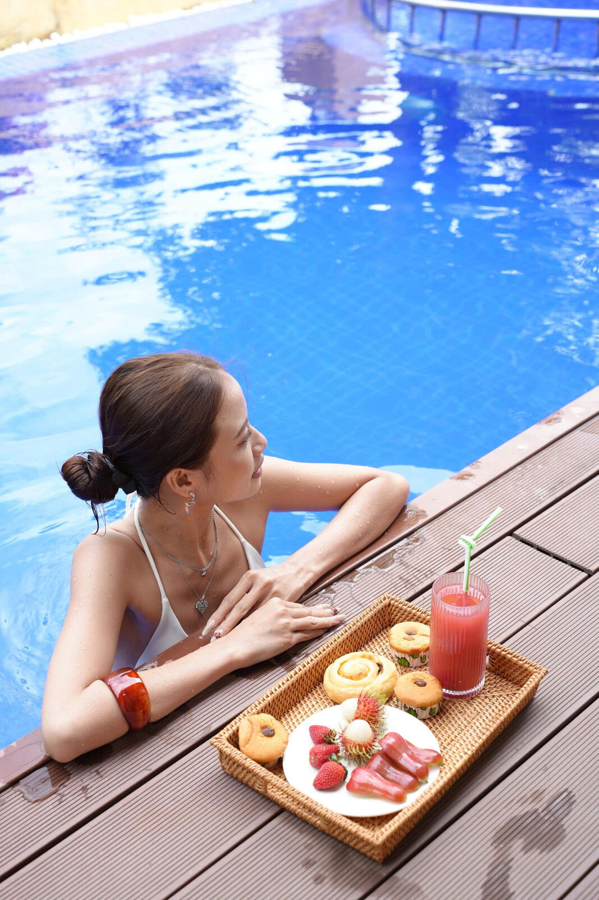

Tiếng Việt
Tiếng Việt English
English 한국어
한국어 中文
中文 Русский
Русский Deutsch
Deutsch
2박 3일은 호이안이 단순한 인증샷 장소가 아니라 나만의 리듬을 가진 경험이 되기에 딱 알맞은 시간입니다. 아침에는 논길을 따라 자전거를 타고, 낮에는 수영장 옆에서 낮잠을 자고, 오후에는 구시가지를 거닐고, 밤에는 투본강 지류인 호아이강 옆에 앉아 등불이 켜지는 모습을 바라봅니다. 이 글은 CGP 럭셔리 호텔 프런트 데스크가 호이안을 처음 찾는 손님들께 자주 추천하는 일정으로, 시간대별로 정리해 여유롭게 다니면서도 중요한 곳을 놓치지 않도록 구성했습니다.
여행 전 준비
출발 전에 몇 가지 기본 정보를 알아 두면 일정이 훨씬 수월해집니다. CGP 럭셔리 호텔은 67 Ly Thuong Kiet에 위치하며 구시가지에서 약 1km, 안방 해변에서 약 3km 떨어져 있습니다. 걸어서나 자전거로 시내에 가기에 충분히 가깝고, 밤에는 중심가의 음악과 인파에서 벗어나 조용히 잠들 수 있을 만큼 떨어져 있는 이상적인 거리입니다.
주소67 Ly Thuong Kiet, 호이안
체크인 / 체크아웃14:00부터 / 12:00 이전
구시가지까지약 1km, 자전거로 5분
안방 해변까지약 3km
다낭 공항에서차로 약 45분. 호텔에서 공항 픽업 서비스(유료)를 제공하니 프런트에 미리 예약해 주세요.
오전에 도착하는 항공편이라면 미리 알려 주세요. 프런트에서 짐을 보관해 드리고, 객실 여유가 있으면 얼리 체크인도 도와드립니다. 기다리는 동안 로비에서 시원한 주스를 마시거나 수영장 옆 가든 카페에서 쉬셔도 좋습니다. 짐은 안전하게 보관되니 바로 여행을 시작하실 수 있습니다.
무엇을 챙길까요?편한 운동화, 챙이 넓은 모자, 자외선 차단제, 저녁용 얇은 겉옷, 그리고 9월부터 12월 사이에 여행한다면 접이식 우비를 챙기세요. 호텔 수영장은 모든 투숙객에게 무료이니 수영복은 필수입니다.
1일차: 체크인과 밤의 구시가지

- 14:00
체크인 후 호텔 둘러보기
체크인 후 발코니 문을 열고 차 한 주전자를 우려 마시며 여행의 피로를 풀어 보세요. CGP의 객실은 35~40㎡이며, 많은 객실에 호이안 시내나 푸른 들판이 내려다보이는 발코니가 있습니다. 1층 킹 스위트 풀 액세스에 묵으신다면 유리문만 열면 바로 수영장 옆 나무 테라스로 나갈 수 있습니다.
- 15:30
수영 한 번, 가든 카페에서 간식
호이안의 오후 햇살은 여전히 강하니 수영장에 가기 가장 좋은 시간입니다. 그다음 초록 덩굴 아래 카페에서 수박 주스나 과일차를 주문하고 프런트에 시내 지도를 요청하세요. 덜 붐비는 길과 꼭 가 볼 만한 현지 식당을 표시해 드립니다.
- 17:00
해 질 녘 자전거로 구시가지 가기
다섯 시쯤 햇살이 부드러워지면 구시가지의 노란 벽이 꿀빛으로 물들기 시작합니다. 호텔에서 등나무 바구니 자전거를 빌려 5분 정도 달리면 중심가에 도착합니다. 구시가지 근처에 자전거를 세우고 쩐푸, 응우옌타이혹, 박당 거리를 걸어 보세요. 구시가지 입장권을 구입하면 내원교(일본교), 복건회관, 고가옥 등을 둘러볼 수 있습니다.
- 19:00
까오러우와 치킨라이스로 저녁 식사
첫날 밤은 호이안을 유명하게 만든 두 가지 음식을 위한 시간입니다. 까오러우는 쫄깃한 황갈색 면에 얇게 썬 차슈, 짜꿰 허브, 바삭한 돼지 껍질 튀김을 곁들입니다. 치킨라이스는 닭 육수로 지은 노란 밥에 찢은 닭고기, 라우람, 피클을 곁들입니다. 이런 저녁 한 끼면 든든하고, 정말 호이안에 왔다는 실감이 납니다.
- 20:30
호아이강에 소원 등불 띄우기
저녁 식사 후에는 호아이강으로 가 보세요. 강 양쪽에는 수백 개의 형형색색 등불이 걸려 있고 수면이 반짝입니다. 짧게 배를 타고 소원을 담은 종이 등불을 띄울 수 있습니다. 음력 보름밤에 방문하면 축제 분위기로 더욱 특별합니다. 피곤해지면 자전거로 몇 분만 달리면 조용한 거리에 있는 호텔로 돌아올 수 있습니다.
 사진: Steffen Schmitz / Wikimedia Commons, CC BY-SA 4.0
사진: Steffen Schmitz / Wikimedia Commons, CC BY-SA 4.0 사진: Christophe95 / Wikimedia Commons, CC BY-SA 4.0
사진: Christophe95 / Wikimedia Commons, CC BY-SA 4.0구시가지 교통 안내구시가지는 여러 시간대, 특히 저녁에 오토바이와 자동차 진입이 제한됩니다. 걷거나 자전거를 타는 것이 가장 편리합니다. 일부 명소는 입구에서 입장권을 확인하니 꼭 지니고 다니세요.
2일차: 시골 마을, 코코넛 숲, 바다
둘째 날은 구시가지를 벗어나 더 푸르고 소박하며 현지인의 일상에 더 가까운, 또 다른 호이안을 만나는 날입니다.
- 07:00
수영장 플로팅 조식
전날 예약하셨다면 페이스트리, 과일, 주스를 담은 등나무 쟁반이 수영장 물 위에 띄워집니다. 많은 커플이 여행에서 가장 아름다운 추억으로 꼽는 경험입니다. 익숙한 분위기를 원하시면 호텔 레스토랑에서 토스트, 달걀, 제철 과일, 커피와 차가 있는 조식 뷔페를 즐기셔도 좋습니다.
- 08:00
자전거로 짜꿰 채소 마을 가기
호텔에서 안방 해변 방향으로 달리면 논을 지나 짜꿰 채소 마을에 닿습니다. 이곳의 바질, 민트, 라우람은 석호의 해초로 거름을 주어 특유의 향이 납니다. 많은 농가에서 여행자에게 반나절 농사 체험을 제공합니다. 땅을 일구고, 전통 물지게로 물을 주고, 갓 딴 채소로 간단한 요리를 만들어 봅니다.
- 10:30
안방 해변
조금 더 가면 호텔에서 약 3km 거리의 안방 해변이 나옵니다. 아직 자연스러운 모습이 남아 있는 해변으로 모래가 곱고 작은 해변 카페가 많습니다. 파라솔 아래 선베드를 빌리고 신선한 코코넛을 마시며 파도를 감상하세요. 날씨가 좋다면 해가 높이 뜨기 전에 수영을 즐기셔도 좋습니다.
- 12:30
호텔로 돌아와 낮잠
한낮은 햇볕을 피해야 할 시간입니다. 호텔로 돌아와 샤워를 하고, CGP 주방에 치킨라이스나 달걀 프라이 반미를 주문한 뒤 낮잠을 주무세요. 오후와 저녁을 위한 에너지를 충전하는 시간입니다.
- 15:00
깜타인 바이마우 코코넛 숲
바이마우 물야자 숲은 호이안 중심에서 약 5~6km 떨어진 깜타인에 있습니다. 둥근 바구니 배를 타고 야자수 사이를 누비며 사공의 바구니 배 돌리기 묘기를 구경하고 어촌 이야기를 듣는 것은 친구나 가족과 함께라면 더욱 즐겁습니다. 프런트에서 차량을 불러 드리거나 믿을 만한 업체를 추천해 드립니다.
- 18:30
야시장과 해산물
저녁에는 강 건너 응우옌호앙 야시장을 둘러보세요. 등불, 옷부터 길거리 간식까지 다양한 물건을 팝니다. 해산물을 좋아한다면 해변 가는 길이나 끄어다이 지역 식당이 가격이 합리적입니다. 반쎄오, 갓잎 쌈, 시원하고 달콤한 깜남 옥수수 째도 꼭 맛보세요.

 사진: Christophe95 / Wikimedia Commons, CC BY-SA 4.0
사진: Christophe95 / Wikimedia Commons, CC BY-SA 4.0 사진: Mig Gilbert from Brighton / Wikimedia Commons, CC BY-SA 2.0
사진: Mig Gilbert from Brighton / Wikimedia Commons, CC BY-SA 2.0 사진: Chester Ho chesterho / Wikimedia Commons, CC0
사진: Chester Ho chesterho / Wikimedia Commons, CC03일차: 여유로운 아침과 기념품
마지막 날은 서두를 필요가 없습니다. 체크아웃은 12:00 이전이므로 오전 시간을 온전히 즐길 수 있습니다.
- 07:30
발코니에서 커피 한 잔
베트남식 핀 커피를 내리고 발코니 문을 열어 들판이나 시내 기와지붕 위로 퍼지는 아침 햇살을 바라보세요. 많은 손님이 호이안을 떠난 뒤 가장 그리운 순간으로 꼽는 시간입니다.
- 08:30
호이안 시장과 맞춤 양복점
강변의 호이안 시장은 차, 커피, 생강 절임, 향신료 같은 특산품을 사기 좋은 곳입니다. 첫날 아오자이나 정장을 맞췄다면 지금 마지막 가봉을 하세요. 호이안 양복점은 보통 24~48시간 안에 완성합니다.
- 10:30
마지막 수영과 체크아웃
호텔로 돌아와 마지막으로 수영을 하고 짐을 정리해 체크아웃하세요. 오후 비행기라면 프런트에서 짐을 맡아 드립니다. 레이트 체크아웃은 객실 상황에 따라 가능하니 하루 전에 문의해 주세요.
- 13:00
공항으로
호텔 차량으로 다낭 공항까지 약 45분이 걸립니다. 특히 성수기에는 전날 차량을 예약해 시간을 여유 있게 잡으세요.
 사진: Chainwit. / Wikimedia Commons, CC BY 4.0
사진: Chainwit. / Wikimedia Commons, CC BY 4.0호이안은 천천히 다닐 때 가장 아름답습니다. 모든 곳을 다 가려 하지 말고, 다시 올 이유를 몇 가지 남겨 두세요.CGP 럭셔리 호텔 프런트 데스크
예산과 이동 팁
2박 3일 여행 경비는 식사와 쇼핑 습관에 따라 크게 달라집니다. 아래 표는 일반적인 항목을 정리한 것이니 예산을 세울 때 참고하세요.
| 항목 | 추천 | 비고 |
|---|---|---|
| 숙박 | CGP 럭셔리 호텔 2박 | 객실 유형과 시기에 따라 요금이 다르니 예약 페이지를 확인하세요 |
| 공항 픽업 | 호텔 전용 차량 | 유료, 프런트에 미리 예약 |
| 시내 이동 | 자전거, 도보 | 프런트에 자전거 대여 문의 |
| 구시가지 입장권 | 매표소에서 구입 | 요금은 해마다 바뀔 수 있음 |
| 식사 | 현지 식당과 레스토랑 | 호이안 길거리 음식은 매우 저렴함 |
| 체험 | 바구니 배, 등불 띄우기 | 배에 타기 전에 가격을 확인하세요 |
모든 것이 포함된 상품을 원하신다면 호텔의 숙박 패키지를 살펴보세요. 예를 들어 3박 호이안 릴랙싱 스테이는 하루 더 머물며 더 여유롭게 다니고 싶을 때 위 일정과 잘 맞습니다.
작지만 중요한 주의사항
한낮 햇볕 피하기
11시부터 15시까지가 햇볕이 가장 강합니다. 호텔에서 쉬고 이른 아침이나 늦은 오후에 외출하세요.
우기에는 날씨 확인
10월과 11월에는 구시가지가 며칠간 침수될 수 있습니다. 프런트에서 상황을 알려 드리고 대체 일정을 추천해 드립니다.
현금 지참
작은 식당과 노점은 현금만 받는 곳이 많습니다. 홈페이지에서 예약할 때는 카드나 QR 코드로 결제할 수 있습니다.
예의 있게 사진 찍기
현지인, 특히 어르신과 시장 상인을 촬영하기 전에는 먼저 양해를 구하세요.
자주 묻는 질문
2박 3일로 호이안을 충분히 둘러볼 수 있나요?
구시가지, 시골 마을, 해변에 집중한다면 첫 방문으로 충분합니다. 참섬이나 미선 유적지까지 가고 싶다면 3~4박을 추천합니다.
CGP 럭셔리 호텔에서 구시가지까지 편리한가요?
매우 편리합니다. 구시가지에서 약 1km 거리로 자전거로 약 5분, 도보로 약 15분입니다.
플로팅 조식은 미리 예약해야 하나요?
네. 주방에서 정성껏 준비할 수 있도록 최소 하루 전에 프런트에 알려 주세요.
호텔에서 투어를 예약해 줄 수 있나요?
프런트는 24시간 운영되며 투어, 티켓, 차량 등 일정에 맞는 서비스를 도와드립니다.